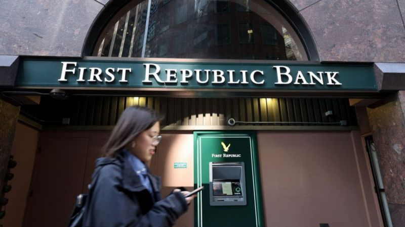
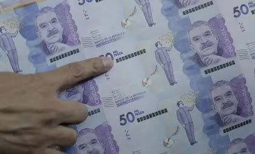

<!DOCTYPE html>
<html>
    <head>
        <meta charset="UTF-8">
        <title>ECONOMIA</title>
        <style>
            img {
                max-width: 100%;
                height: auto;
            }
        </style>
<script type="text/javascript">
    document.oncontextmenu = function() {
        alert("No puedes copiar contenido de esta página");
        return false;
    }
    document.onkeydown = function(e) {
        if (e.ctrlKey && (e.keyCode === 67 || e.keyCode === 65 || e.keyCode === 88)) {
            alert("No puedes copiar contenido de esta página");
            return false;
        } else {
            return true;
        }
    }
</script>
    </head>
     <meta name="viewport" content="width=device-width, initial-scale=1.0">
    </html>
    
    <article><h2>Grandes entidades financieras en EE.UU. rescatan con US$30.000 millones al First Republic Bank ante las preocupaciones por el sector bancario</h2></article>
    
    <p>Un grupo de grandes bancos estadounidenses inyectó este jueves US$30.000 millones al banco First Republic, una pequeña entidad financiera regional que se consideraba estaba en riesgo de quiebra</p>
    <p>La medida se ejecutó en un momento en el que las autoridades estadounidenses intentan calmar las preocupaciones sobre la salud del sistema bancario del país, tras el colapso de dos bancos, entre ellos el Silicon Valley Bank (SVB), cuyos depósitos fueron garantizados por el gobierno federal el pasado fin de semana.</p>
    <p>La preocupación por el sector financiero se ha esparcido globalmente, despertando temores sobre una posible crisis bancaria mundial.</p>
    <p>Las autoridades estadounidenses celebraron la decisión de los grandes bancos, cuyos responsables dijeron que esta era un reflejo de su "confianza".</p>
    <p>Afirmaron que el sistema bancario tiene mucho efectivo y ha generado grandes beneficios. "Los eventos recientes no han hecho nada para cambiar esto", aseguraron.</p>
    <p>Las noticias sobre el plan de ayuda ejecutado por 11 bancos, encabezados por JP Morgan y Citigroup, animaron los mercados financieros e impulsaron las acciones del First Republic, que en algún momento subieron más de 20%, lo que provocó que se suspendiera su cotización.</p>
    <p>Pese a ello, tras el cierre de la sesión de la Bolsa comenzó nuevamente una venta masiva de acciones que parece indicar que las preocupaciones persisten.</p>
    <p>Las acciones de ese banco habían perdido casi 70% durante la última semana.</p>
    <p>"Esta muestra de apoyo por parte de un grupo de grandes bancos es muy bienvenida y demuestra la resiliencia del sistema bancario", dijeron las autoridades financieras.</p>
    
    <p>Según destaca el diario Washignton Post, esta intervención es, según los analistas, uno de los movimientos más radicales en la historia moderna de la banca de EE.UU., y refleja el grado de preocupación entre altos funcionarios federales y ejecutivos de Wall Street sobre la estabilidad de la industria.</p>
    
    <h2>Economía en Colombia creció 5,85% en enero, impulsada por actividades financieras.</h2>
    
    <p>En enero, el Indicador de Seguimiento a la Economía (ISE) se ubicó en 115,10, lo que significó un crecimiento de 5,85% frente al mismo mes de 2022, cuando estaba en 108,74.</p>
    <p>A pesar de las proyecciones de desaceleración económica para este año, el crecimiento de la economía frente a diciembre de 2022 fue de 2,57%, en la serie ajustada por efecto estacional.</p>
    <p>Las actividades primarias, que comprenden la agricultura, ganadería, caza, silvicultura y pesca, y la explotación de minas y canteras, crecieron 0,56% anual. Pero decrecieron 1,18% frente al mes inmediatamente anterior.</p>
    <p>Por otro lado, las actividades secundarias, que comprenden a la industria manufacturera y la construcción, crecieron 2,68% anual y 2,15% frente a diciembre del año pasado.</p>
    <p>El grupo de las terciarias creció 7,46% anual en enero y 1,31% intermensual. En este grupo están el suministro de servicios públicos, comercio al por mayor y al por menor, información y comunicaciones, actividades financieras y de seguros, actividades inmobiliarias, entre otras</p>
    <p>Dentro de este grupo, las que más crecieron fueron las actividades financieras y de seguros, con un aumento anual de más de 64%, según las cifras del Dane.</p>
    <p>Le siguió el grupo de administración pública y defensa; actividades artísticas, de entretenimiento y recreación y otras actividades de servicios, que crecieron 6,8% anual en enero.</p>
 <div id="autor">
<p>Jorge Andres Mesa</p>
   </div>
